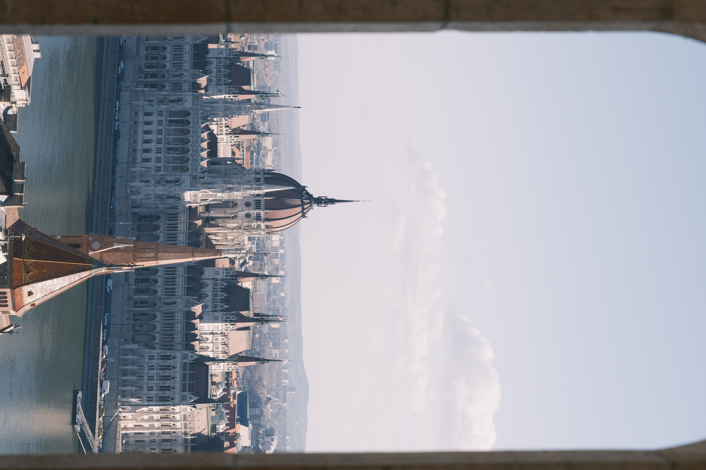

Cityscape
Budapest
A framed city view that uses the window edge and pale afternoon light to compress the skyline into a quieter architectural study.

Cityscape
A framed city view that uses the window edge and pale afternoon light to compress the skyline into a quieter architectural study.
